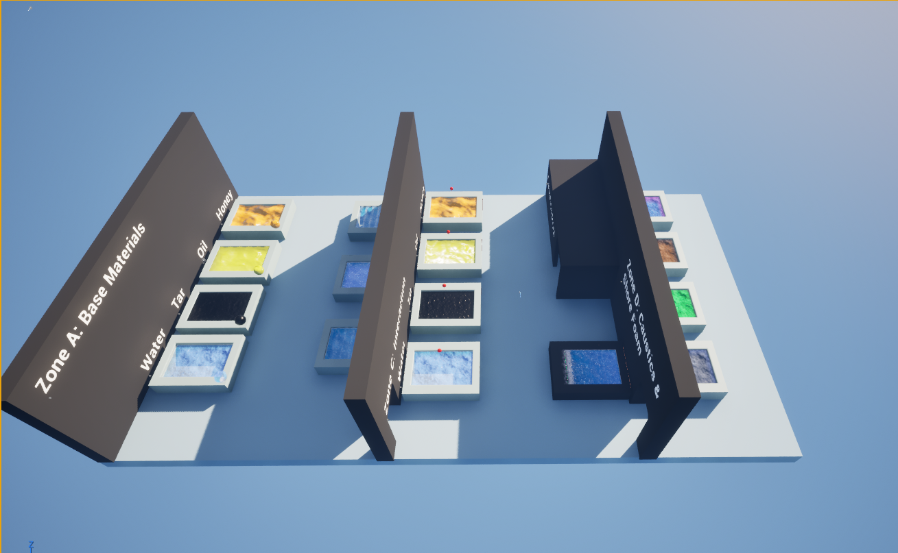
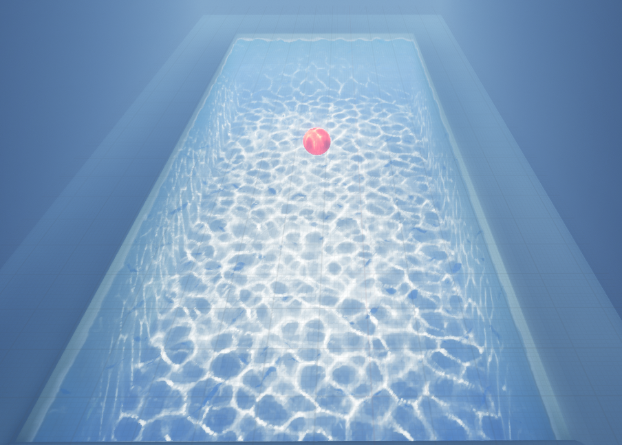
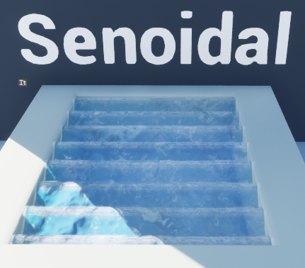
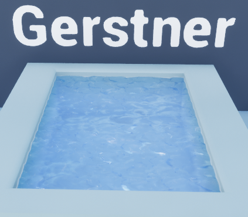
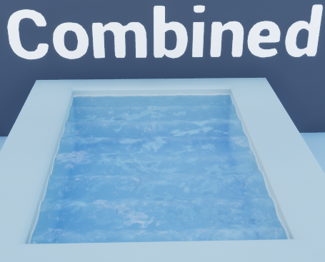
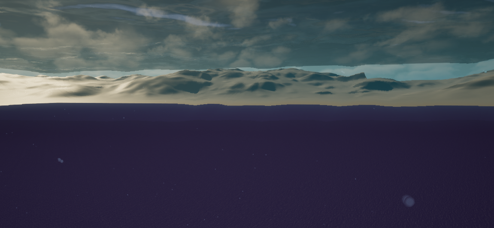
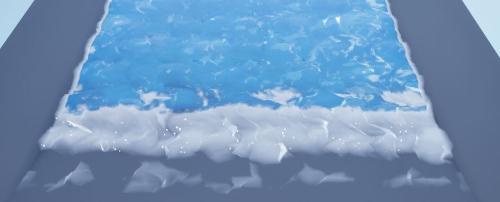
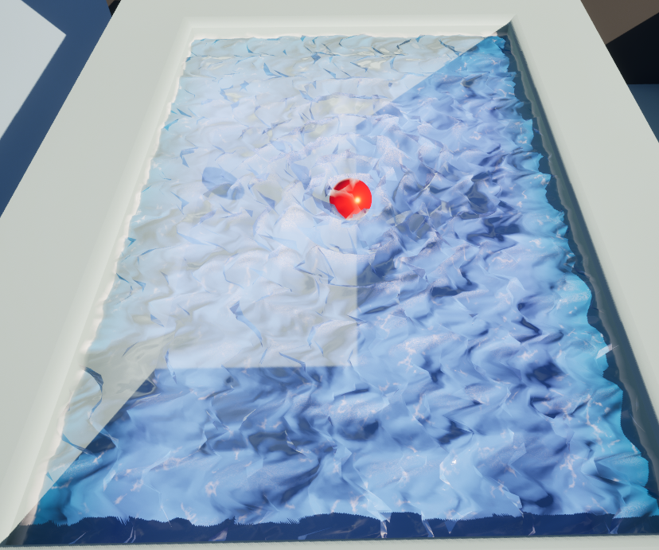

Trabajo Fin de Grado · Unreal Engine 5 · Informática Gráfica
LiquidFX
Plugin modular para crear superficies líquidas, cáusticas, oleaje, espuma, efectos underwater e interacción básica agua-objeto en tiempo real.
Descripción del proyecto
Una base visual reutilizable para efectos líquidos
LiquidFX se ha desarrollado como una herramienta modular pensada para construir agua visualmente creíble sin recurrir a una simulación física completa. El sistema combina materiales, shaders, parámetros editables, Blueprint, cáusticas, postprocesado y efectos de interacción para formar una solución flexible dentro de Unreal Engine 5.
01
Objetivo principal
Conseguir un equilibrio entre calidad visual, facilidad de configuración y rendimiento, manteniendo cada efecto separado en módulos que puedan ampliarse en el futuro.
Sistema modular
Módulos principales
Material base
Normales animadas, transparencia, parámetros visuales y base reutilizable para todos los líquidos.
Oleaje
Ondas senoidales, Gerstner y combinación con ruido para romper patrones repetitivos.
Cáusticas
Proyección dinámica de patrones de luz mediante texturas animadas y spotlight.
Integración con el entorno
Depth fade, cambio de color según profundidad y mejoras visuales para evitar bordes artificiales.
Underwater
Partículas, distorsión visual y oscurecimiento progresivo para reforzar la sensación de inmersión.
Interacción
Espuma, ripples, salpicaduras y una base de flotación simplificada para objetos físicos.
Resultados visuales
Capturas del proyecto
Esta galería muestra los principales resultados visuales de LiquidFX: demo general, cáusticas, tipos de oleaje, underwater, espuma e interacción mediante ripples.

Vista general
Nivel demo de LiquidFX

Cáusticas
Spotlight con cáusticas

Oleaje
Onda senoidal

Oleaje
Ondas de Gerstner

Combinación
Senoidal + Gerstner

Underwater
Distorsión visual

Foam
Espuma en la orilla

Interacción
Ripple por impacto
Vídeos demostrativos
LiquidFX en movimiento
Esta sección recoge los principales vídeos de la demo: vista general, tipos de agua, cáusticas, escena underwater, interacción con objetos, distintos líquidos, presets y shoreline foam.
Demo principal
Vista general del nivel demo
Presenta el sistema completo y sirve como primer contacto visual con el plugin. Es el vídeo principal de la página.
Oleaje
Tipos de movimiento del agua
Comparativa entre agua base, onda senoidal, Gerstner y combinaciones.
Cáusticas
Patrones de luz animados
Muestra la proyección dinámica de cáusticas sobre la escena.
Underwater
Escena submarina
Enseña partículas, distorsión visual y oscurecimiento por profundidad.
Interacción
Agua y objetos
Demuestra la respuesta del sistema ante objetos, ripples, salpicaduras o flotación.
Materiales
Distintos líquidos
Presenta variaciones de materiales líquidos con diferentes comportamientos visuales.
Presets
Presets configurables
Muestra la idea de modularidad y reutilización mediante configuraciones diferentes.
Foam
Espuma en la orilla
Enseña el contacto entre el agua y el entorno mediante shoreline foam.
Repositorio
Documentación y código del plugin
En el repositorio se puede consultar la estructura del proyecto, la carpeta del plugin LiquidFX, los materiales, blueprints y recursos utilizados para la demo.